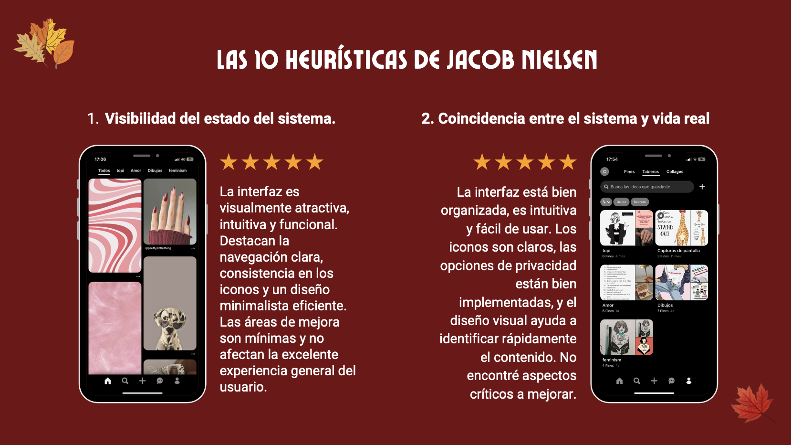
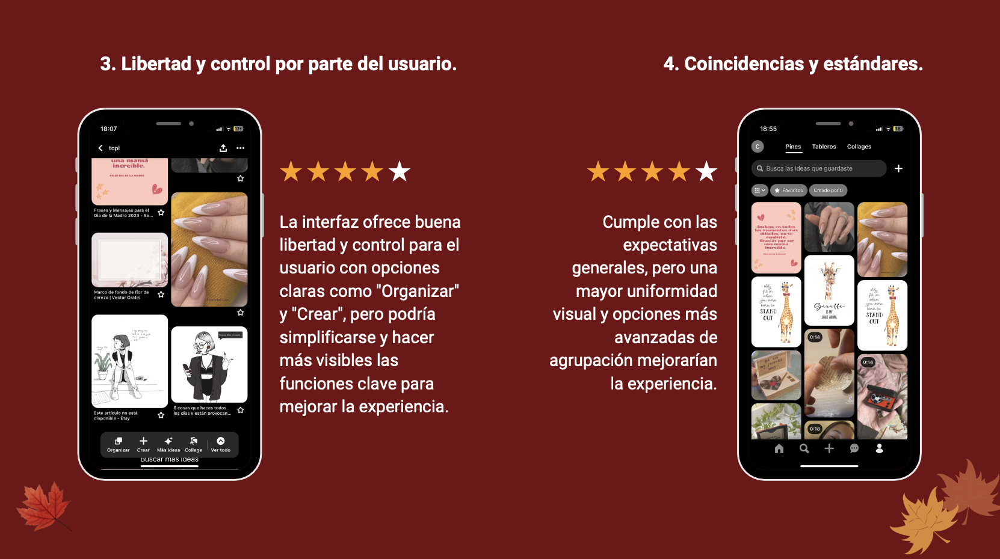
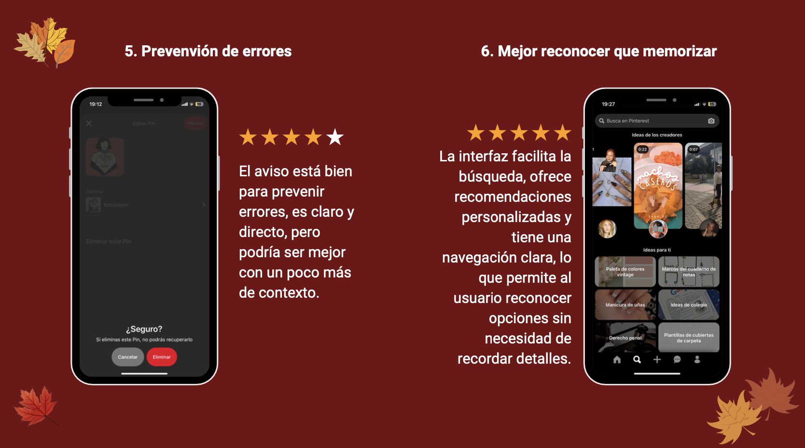
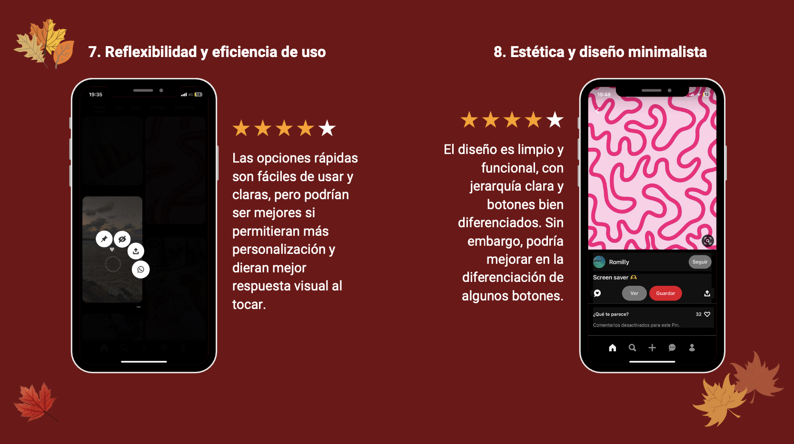
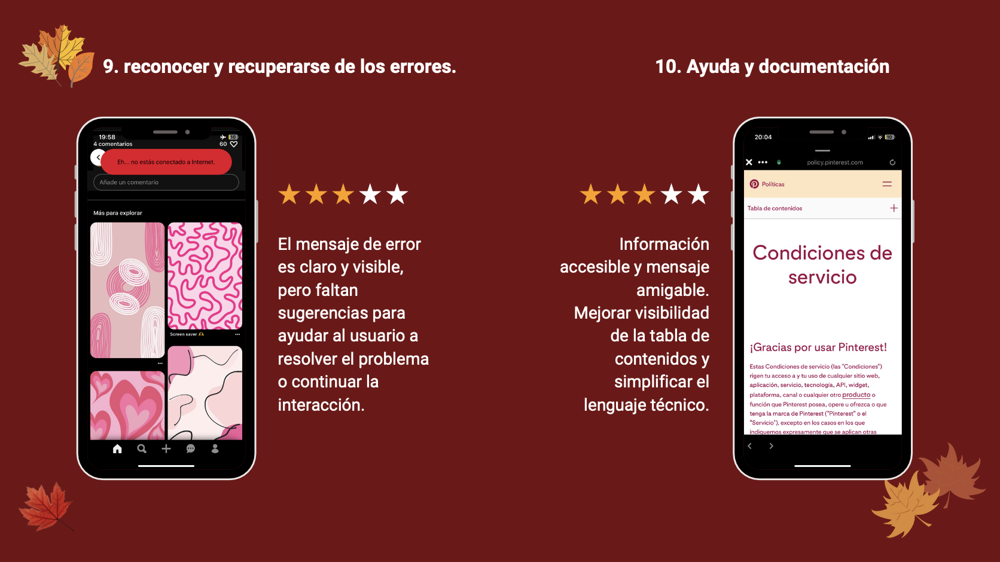

Descripción del Proyecto
Este análisis abarca las 10 heurísticas de Nielsen aplicadas a Pinterest, evaluando su experiencia de usuario y resaltando áreas clave de mejora.
Tiempo de desarrollo
2 semanas
Cliente
Proyecto Académico - Santo Tomás de Aquino
Si necesitas realizar un análisis heurístico para tu producto digital, contáctame.
ContáctameTecnologías
Recursos

Evaluación de la visibilidad del estado del sistema en Pinterest.
Correspondencia clara entre Pinterest y el lenguaje de los usuarios.
Opciones que permiten deshacer acciones en Pinterest.
Revisión de la consistencia visual y funcional en Pinterest.
Ejemplo práctico de interfaz y experiencia de usuario.